Project Proposal
Project Proposal
Exploring the relationship of suicide with potential drivers to reduce suicide rates.
Project Background
Suicide is recognised as a public health priority by the World Health Organisation1, as over 700,000 people die annually due to suicide . It is a problem that is not unique to high-income countries (where there is a well-established link with mental disorders) but also affects low- and middle-income countries (where many suicides happen impulsively in moments of crisis with a breakdown in the ability to deal with life stresses). Suicide mortality rate is one of the indicators of target 3.4 of the Sustainable Development Goals: by 2030, which is to reduce by one third premature mortality from noncommunicable diseases.
Project Motivation
Our World in Data 20152 collates global suicide-related data from various sources to contribute to an informed, open debate about ways to prevent suicides. Analysis of the data through unsupervised machine learning techniques such as clustering and regression will allow for more actionable and meaningful insights to be drawn, which could ultimately contribute to timely, evidence-based suicide prevention programmes.
Project Objectives
The project aims to deliver an R-Shiny app that provides interactive user interface design to:
• Analyse global differences and patterns in suicide-related mortality rates across countries, age groups, gender, and time using Time Series Clustering
• Identify important factors driving suicide-related mortality rates using Panel Data Regression
Data Description
The main data on suicide rate is obtained from Global Burden of Disease Collaborative Network (IHME 20193) as it provides comprehensive suicide statistics based on country, year, gender, and age. However, since the purpose of the project is to uncover patterns, indicators (i.e., social and economic) and risk factors (i.e., homicide, violence and drug abuse) affecting suicide rate, additional dataset from World Health Organization4, World Bank and United Nations will also be used.
Proposed Scope and Methodology
- Confirm the selection of appropriate indicators and risk factors associated with suicide rate
- Data wrangling by cleaning and joining with other dataset by country and year
- Perform Exploratory Data Analysis using appropriate R packages
- Analyse the data using Time Series Clustering using appropriate R packages
- Analyse the data using Panel Data Regression using appropriate R packages
- Model validation and selection of Panel Data Regression
- Develop R-Shiny app to enhance user interaction
The project milestone and timeline for the project is shown below:
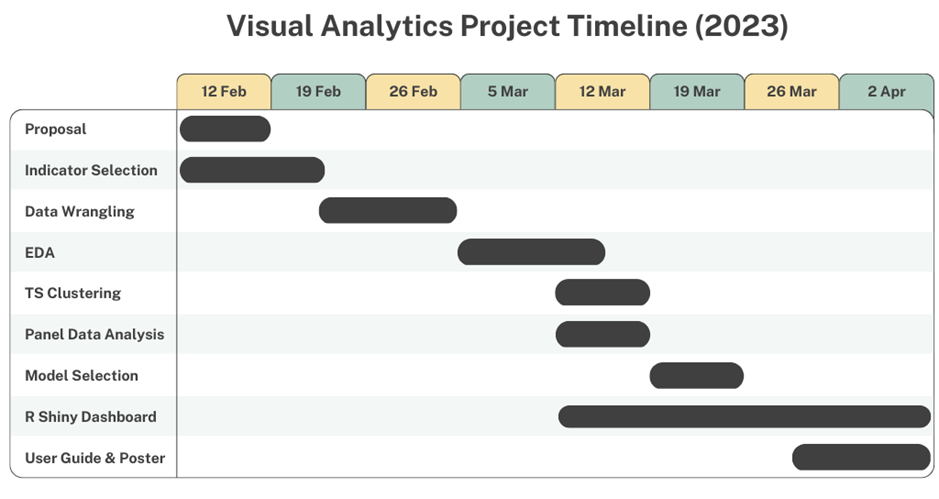
Storyboard and Visualisation
Sketch of Exploratory Data Analysis (EDA)
Exploring the world suicide statistics
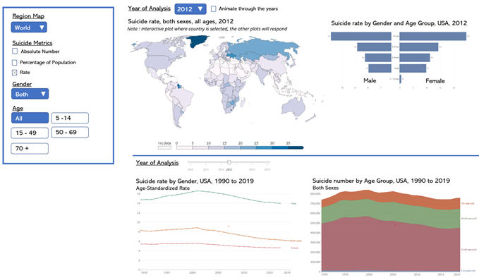
Time Series
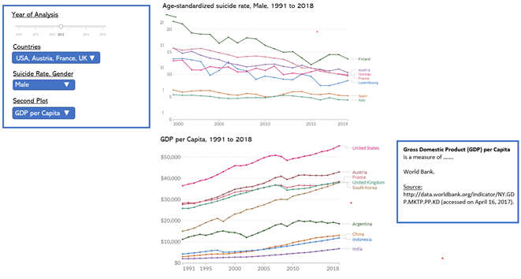
Scatterplot
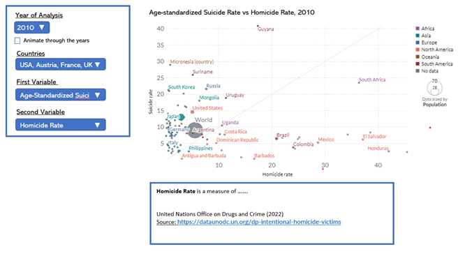
Correlation Matrix
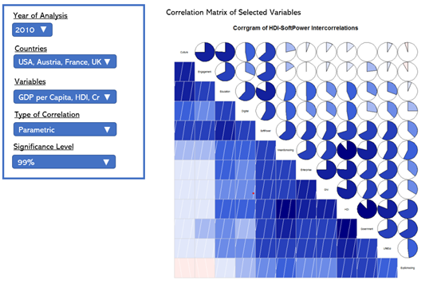
Time Series Clustering
Cluster selection
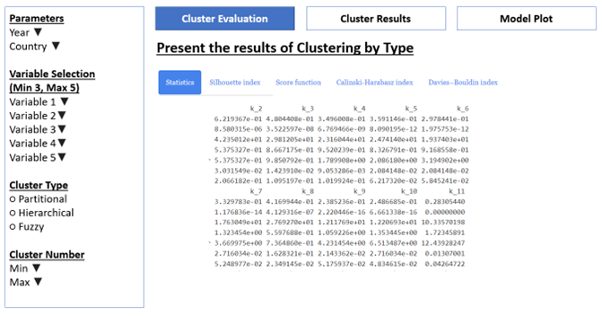
Cluster input
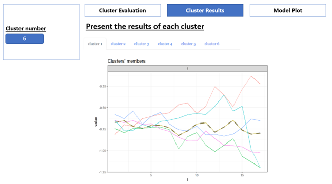
Cluster result
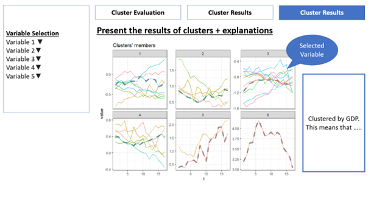
Panel Data Regression
Hausman Test
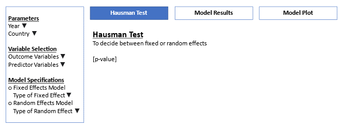
Model Summary
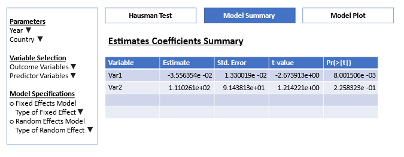
Model Plot
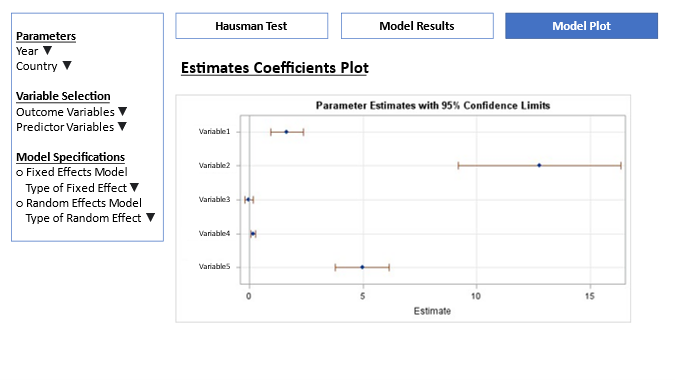